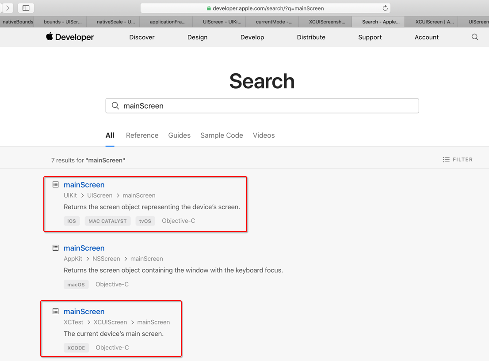

iOS
iOS自动化测试相关
XCTest
- iOS最新测试框架是：
XCTest- 别称：
XCUITest
- 别称：
下面列出一些常用的部分：
- 用户界面
- User Interface Tests | Apple Developer Documentation
- 其中常用的部分是：
XCUIScreen- A physical screen attached to a device
XCUIScreenshot- A captured image of a screen, app, or UI element state.
XCUIDevice- Simulates physical buttons, device orientation, and Siri interaction for an iOS device.
XCUISiriService- Simulates a device’s Siri interface.
XCUIRemote- Simulates interaction with a physical remote control.
- 其中常用的部分是：
- User Interface Tests | Apple Developer Documentation
关于具体细节如下：
- 设备
- XCUIDevice - XCTest | Apple Developer Documentation
- sharedDevice
- The current device.
- sharedDevice
- XCUIDevice - XCTest | Apple Developer Documentation
- 远程
- XCUIRemote - XCTest | Apple Developer Documentation
pressButton:- Sends a momentary press of a button on a physical remote control.
- XCUIRemote - XCTest | Apple Developer Documentation
一些心得
找接口和函数时，可以充分利用官网自带的搜索
比如想要找哪些类中有mainScreen，可以搜：
https://developer.apple.com/search/?q=mainScreen

可以看到我们希望找的有2处：
mainScreenUIKit->UIScreen->mainScreen- Returns the screen object representing the device’s screen.
mainScreenXCTest->XCUIScreen->mainScreen- The current device’s main screen.
官网文档分语言的 -》 Swift和Objective-C 接口略有不同的
- XCUIScreen
- Swift
- XCUIScreen - XCTest | Apple Developer Documentation
- Objective-C
- XCUIScreen - XCTest | Apple Developer Documentation
- Swift
不过，总体上内容是一致的：
- mainScreen
- The current device’s main screen.
- screens
- The current device’s active screens.
只不过Swift和OC的写法不太一样而已。
注：之前见过个别函数和接口好像功能上略有不同。
目前没找到。等找到了。再补充。
总之：注意看文档时所选择的语言，是Swift还是ObjC，不要搞错就好。
测试Screen相关内容：XCUIScreen和UIScreen
- XCUIScreen
- 文档
- XCUIScreen - XCTest | Apple Developer Documentation
- 文档
- UIScreen
- 文档
- UIScreen - UIKit | Apple Developer Documentation
- 文档
之所以要注意此处有2个Screen的原因是：
之前想要找，除了scale之外的bounds属性，最后发现：XCUIScreen是没有的
所以代码：
return [XCUIScreen.mainScreen nativeScale];
return [XCUIScreen.mainScreen bounds];
return [XCUIScreen.mainScreen nativeBounds];
会报错。要改为：
return [UIScreen.mainScreen nativeScale];
return [UIScreen.mainScreen bounds];
return [UIScreen.mainScreen nativeBounds];
才可以。
微信
连续多次崩溃会进入安全模式
iOS中微信如果检测到连续崩溃了多次后，会进入安全模式：
然后才会恢复正常微信界面。
后来，换了iPhone 6P，多次调试期间，虽然微信没怎么崩溃，但是也遇到类似的问题：
如果要用代码自动化操作实现上述步骤，则可以参考：